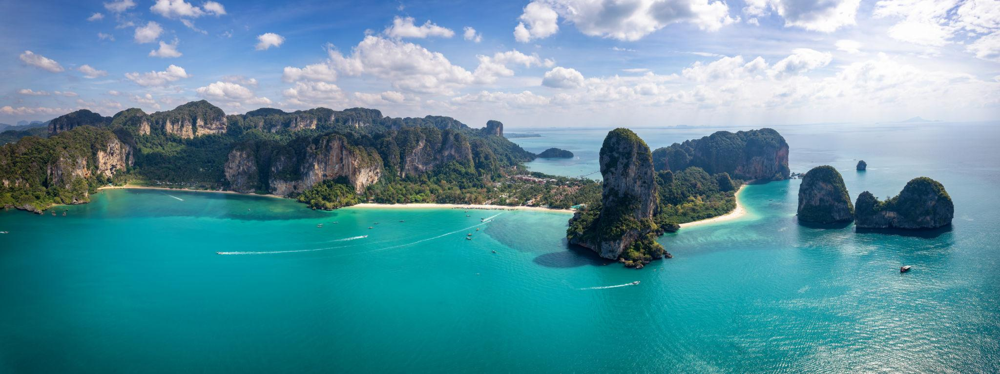
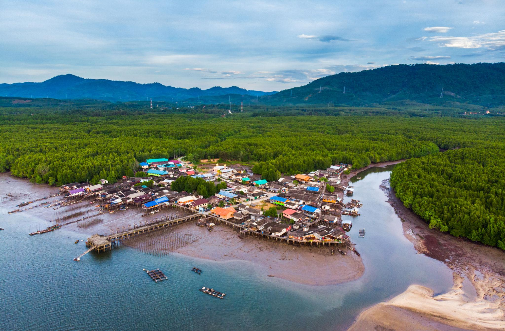

↗
↗
KRABI · ANDAMAN COAST
Railay Beach
Cliff-lined shores, hidden lagoons, and a village reached only by boat.
Learn more →
THAILAND, OFF THE BEATEN PATH
From limestone cliffs to quiet island mornings, find the places and stories that make Southern Thailand unforgettable.
Explore destinations ↗Andaman Sea • Gulf of Thailand
↓ SCROLL TO EXPLORE
A REGION TO REMEMBER
Southern Thailand is a place of contrasts: dramatic karst islands rise from turquoise water, rainforest trails lead to hidden falls, and lively markets bring local flavors to every evening.
Take the longtail boat, linger over lunch, and leave room for the unexpected. The best moments here often happen between the places on your itinerary.
Get to know the region →FIND YOUR SOUTH
Four starting points for your next adventure. Each one has its own rhythm, its own view, and a reason to stay a little longer.
↗
KRABI · ANDAMAN COAST
Cliff-lined shores, hidden lagoons, and a village reached only by boat.
Learn more → ↗
↗
SONGKHLA · GULF COAST
A breezy city beach, local seafood, and the beloved Golden Mermaid statue.
Learn more → ↗
↗
SATUN · ANDAMAN COAST
Coral gardens, soft-sand beaches, and island days measured by the tide.
Learn more → ↗
↗
PHUKET · ANDAMAN COAST
A wide bay with lively beachfront energy, sunset walks, and easy day trips.
Learn more →BEFORE YOU GO
A little planning makes more room for discovery. Use this quick guide as a starting point, then check local conditions before you set off.
| Destination | Province | Experience | Entry & travel notes | Map |
|---|---|---|---|---|
| Railay Beach | Krabi | Beach · Climbing | Boat access; transfer cost varies by pier and season. | Map ↗ |
| Samila Beach | Songkhla | Beach · Culture | Public beachfront; local transport is available from town. | Map ↗ |
| Koh Lipe | Satun | Island · Snorkeling | Reach by boat; schedules and marine park fees can vary. | Map ↗ |
| Patong Beach | Phuket | Beach · City | Public beach; taxis and local buses connect nearby areas. | Map ↗ |
✳ Transport, opening conditions, and fees may change. Confirm details with local operators before travelling.
POSTCARDS FROM THE SOUTH
A glimpse of the coast, the color, and the quiet moments in between.
LET'S PLAN A LITTLE DAYDREAM
Tell us what kind of trip you have in mind, or share a place in the south you think more people should know about.